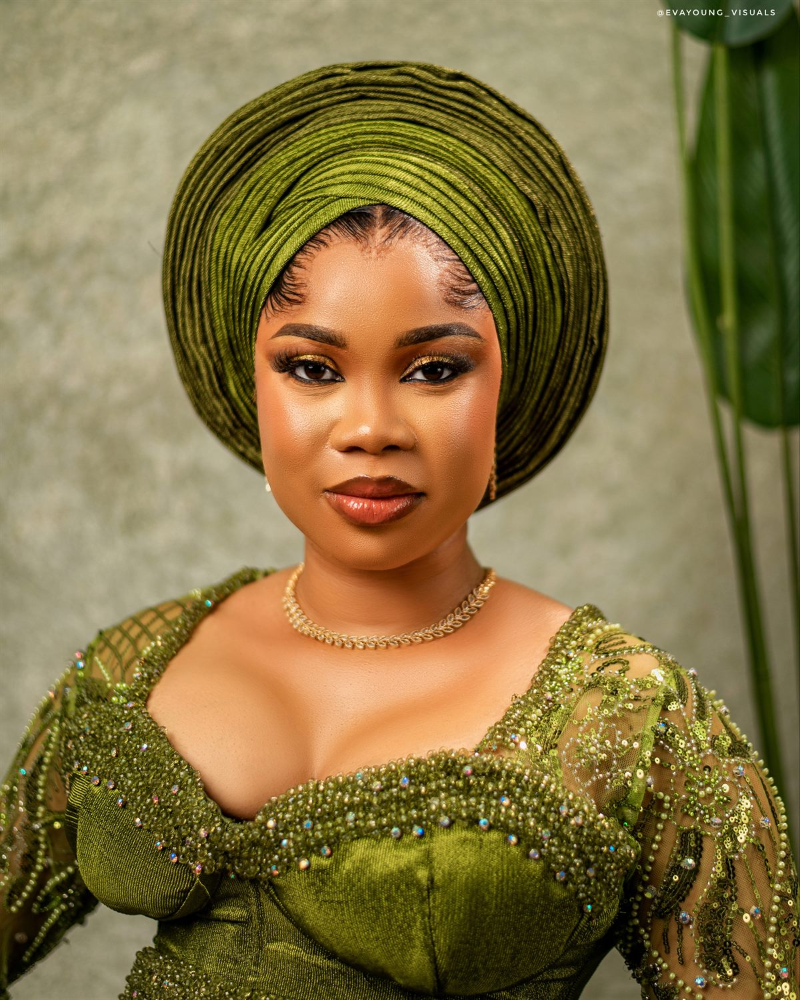
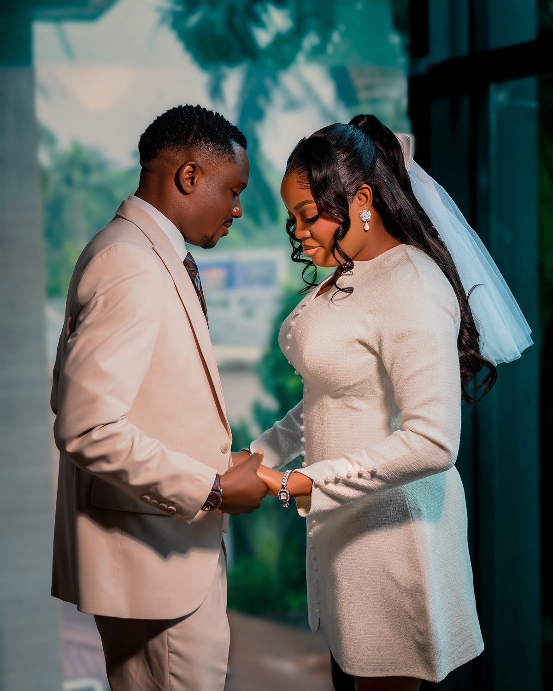
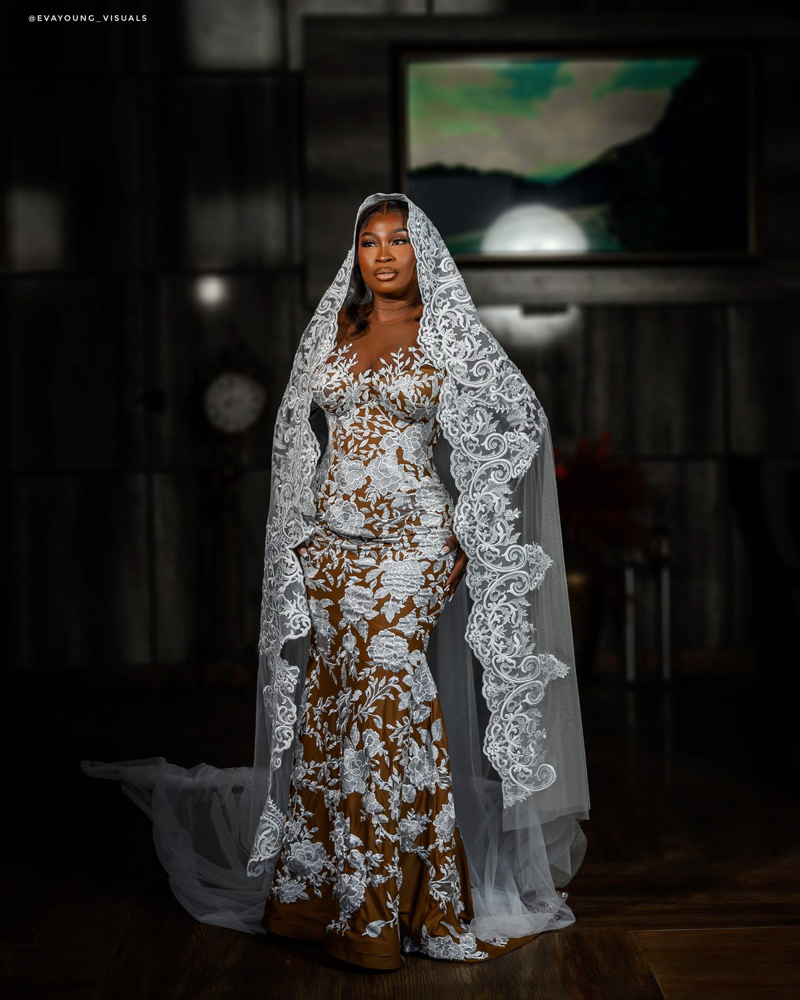

STILL✳& STORIES


A fleeting feeling.
Something worth keeping.
Photographs that feel
like a memory.
Stay for the story.
Not just a frame.
A feeling, unfolding.
A FEELING THAT STAYS.
Some things don’t need words.
Just the right frame.
Portraits with presence. Places with a pulse. Ordinary moments, seen a little differently.
Selected stories.
A collection in motion. More stories to come. ↗
A little light. A little patience.
A different way of seeing.
First, notice.
The best stories often happen
before anyone says a word.
A face in a crowd. Light resting on a wall. The pause between two moments. Still / Stories begins with paying attention to the things that are easy to pass by, and impossible to recreate.
PORTRAITS · PLACES · PASSING MOMENTSThen, feel.
Less direction.
More room to be yourself.
A quiet approach makes space for something honest. Observe the light, find the rhythm, and let the moment breathe. The aim is a photograph that feels lived in, one that holds an atmosphere as well as an image.
NATURAL LIGHT · PATIENCE · PRESENCEMake it last.
A photograph is a meeting.
A story we make together.
Whether it begins with a person, a place, or an idea, the work starts with a conversation. What matters to you? What should this moment feel like when you return to it? Let’s find the frame that keeps that feeling.
Your story.
A new perspective.
Every session begins with a conversation. A little curiosity, a clear intention, and space for the unexpected.
People & portraits
Personal portraits and stories about people. An attentive, unhurried approach, with room for personality to come through.
Editorial & expression
Ideas given a visual language. Fashion, movement, and considered compositions that carry a story beyond a single frame.
Places & atmosphere
A sense of somewhere. Landscapes, spaces, and details photographed with an eye for the mood that makes them matter.